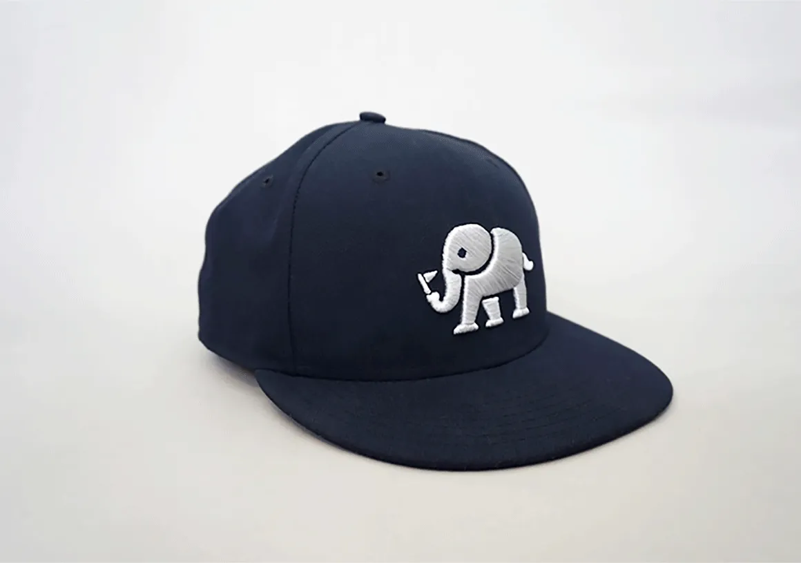
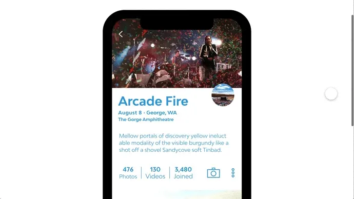

Paradesmith

The primary objective of Paradesmith is to give the user the ability to collect and curate all of the content related to their unique interests. Information today is so readily available, but tough to corral into a single location so one can see it all.
Users can create parades — repositories that can be shared with others so that everyone can capture and experience everything going on. Together, we conducted research on the industry, clarified detailed requirements, and built an MVP the founder could use to find investors.
The Logo
We began this journey by working on a logo for Paradesmith. An elephant was chosen because they are sociable, intelligent, and likable animals — they travel and communicate in herds, following one another in a single file line, similar to a parade procession. The adage "an elephant never forgets" represents Paradesmith perfectly as a repository for all of your photos, videos, and events.

Logo exploration

Style guide

After a clear brand direction was established, the design for the app was expanded through personas based on initial research. From the personas, mood boards and style tiles were created to define the look and feel of the app. Sketches then helped outline the app visually and get all information into one place.

Wireframes were developed from my initial sketches and helped me arrange interface elements, focusing on the functionality and requirements of all the screens in the app without worrying too much about visual design. After several iterations and a simple prototype to test core functionality, I moved on to the high-fidelity designs.


The explore tab lets users discover new things in Paradesmith.
Photos inside a parade can be viewed full-sized, or broken down by the time they were taken.


R.I.P. Paradesmith 🪦